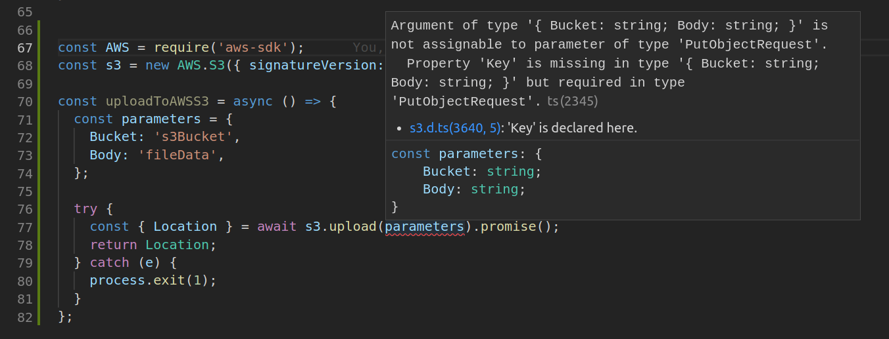

Gradual Typing With Javascript and VS Code
Recently I had to write a file uploader for AWS S3 in node.
const AWS = require('aws-sdk');
const s3 = new AWS.S3({ signatureVersion: 'v4' });
const uploadToS3 = async () => {
const parameters = {
Bucket: s3Bucket,
Body: fileData,
};
try {
const { Location } = await s3.upload(parameters).promise();
return Location;
} catch (e) {
process.exit(1);
}
};
It looks simple enough, but you’re probably going to be spending a decent amount of time googling around for examples if the parameters in an s3 call are more than just basic hello world. Add to this javascript is a dynamically typed language; you won’t know if your code will work until you run it, but you’re also working with Amazon’s AWS SDK, it’s derived from Java and expects a few things beyond just numbers and strings. In the end, you’d be beating your head against the stack traces and other HTTP 400 - Bad Request errors coming out of the S3 service.
Is there anything that can help guarantee your calls to upload are legit with some sort of type checking?
You’ve probably heard of the type annotated javascript superset language TypeScript and its supplementary type definition repository Definitely Typed, which contains definitions for many popular NPM packages including AWS-SDK. This would be great except switching from Javascript to TypeScript requires adoption from the rest of the team, separate .ts files, and modifications to your build process. Is there any way to get this without futzing with your existing project?
If you’re using the Visual Studio Code editor it turns out you can enable type checking on a per-file basis by adding the comment to the beginning of the file
// @ts-check
to the beginning of your file. 
The parameters variable is highlighted in red, and when you mouseover it you’ll see:
Argument of type '{ Bucket: string; Body: string; }' is not assignable to parameter of type 'PutObjectRequest'.
Property 'Key' is missing in type '{ Bucket: string; Body: string; }' but required in type 'PutObjectRequest'.ts(2345)
s3.d.ts(3640, 5): 'Key' is declared here.
const parameters: {
Bucket: string;
Body: string;
}
There are a bunch of things happening here!
It turns out VS Code has pulled in the AWS S3 type definitions in the background. The type of the parameter parameter that s3.upload takes is called PutObjectRequest. The Type Script compiler is kvetching over a missing required field it needs to say the parameters variable is of that type. There’s nothing stopping you from running the code as it stands here, it’ll just crash at runtime.
When you add the Key parameter (the unique file key in an S3 bucket), the red squiggly underline disappears and you have a properly formed object.
The same checking is useful for output types.
const { Location } = await s3.upload(parameters).promise();
You can mouseover s3.upload and see it returns a type of AWS.S3.ManagedUpload.SendData, which means the destructuring operation { Location } is guaranteed to work and Location will be populated.
Links:
Type Annotation and Checking within javascript
https://github.com/Microsoft/TypeScript/wiki/Type-Checking-JavaScript-Files
JSDoc - the type annotation here is based after JSDoc, so looking at the docs can’t hurt
http://usejsdoc.org/tags-type.html
More to come, as with introducing gradual typing, learning this stuff is also a gradual process that pays you back the more you put into it.